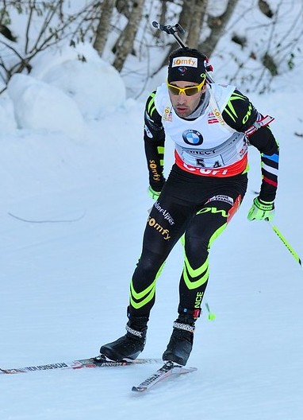
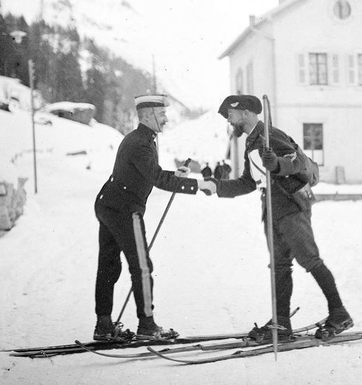
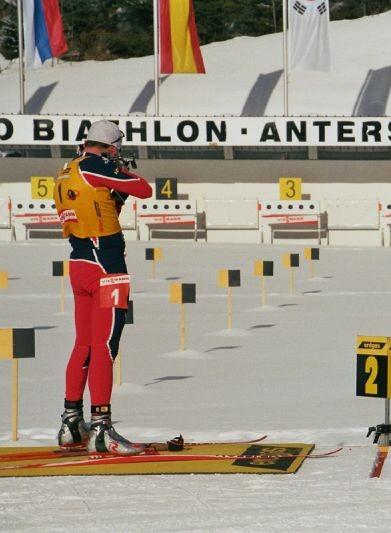

Martin Fourcade, champion français
Un sport militarisé
Au xviiie siècle, les unités de patrouilles des armées nordiques pratiquent le biathlon pour surveiller les frontières.
Le bon soldat de ces régions est alors à la fois bon tireur mais aussi excellent skieur.
En 1767, la première compétition est organisée sur la frontière suédo-norvégienne entre des patrouilles des deux pays.
Jusqu’à la toute fin du xixe siècle, la combinaison du tir et du ski n’est utilisée qu’au sein de l’armée, à l’exception de la chasse.
Pour aller à la page du ski, cliquez ici.

Armée norvégienne en tenue de biathlon
Biathlon avec tir à la carabine
Le tir à la carabine, aussi appelé tir sportif, est une discipline
qui existe depuis le début du 19e siècle. Il est devenu un sport olympique en 1896. C'est un sport presque
uniquement composé d'hommes, même dans les épreuves olympiques.
Pour aller à la page du tir à la carabine, cliquez ici.

Pratique du tir